Overview
In this project, I reconstruct color photographs from Sergei Mikhailovich Prokudin‑Gorskii's three filtered glass plates by auto‑aligning the red and green channels to blue and stacking them into RGB. The code uses robust similarity scoring and a coarse‑to‑fine search to align quickly and resist lighting variation.
NCC (or L2)
Edges: Sobel
Border crop: 10 px
Coarse window: ±48
Refine window: ±15
Max levels: 6
Formats: uint8/uint16 → [0,1]
Naïve Method
Split the stacked grayscale plate vertically into B, G, R; for each of G and R, perform an exhaustive search over displacements within a small window relative to B. Score candidate shifts with NCC (zero‑mean, variance‑normalized) or L2 Norm. Crop borders (naively) to avoid edge artifacts and compare only the overlapping slices to prevent out‑of‑bounds and unfair comparisons. Reconstruct the color image by rolling channels by the chosen offsets and stacking to RGB.
Normalized Cross-Correlation (NCC):
\[NCC(A, B) = \frac{\sum_{i,j}(A_{ij} - \bar{A})(B_{ij} - \bar{B})}{\sqrt{\sum_{i,j}(A_{ij} - \bar{A})^2} \sqrt{\sum_{i,j}(B_{ij} - \bar{B})^2}}\]
Invariant to brightness and contrast changes
L2 Norm (SSD):
\[L2(A, B) = \sum_{i,j}(A_{ij} - B_{ij})^2\]
Sum of Squared Differences
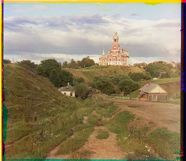
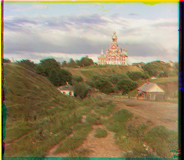
Naïve Method Improved
Percentile stretching of channels can reduce outliers but may flatten highlights/shadows if overdone. I chose to increase intensity of green by 1st-99th percentile and blue/red by 10th-90th percentile. This worked for most images, but is not a one-all fix.
Percentile Stretching:
\[I'_{ij} = \frac{I_{ij} - p_{low}}{p_{high} - p_{low}}\]
where \(p_{low}\) and \(p_{high}\) are percentile values
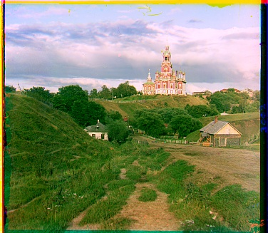
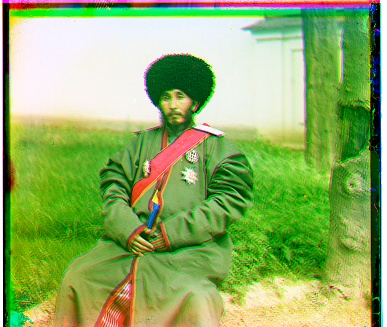
Image Pyramid Speedup
I built a coarse-to-fine image pyramid via subsampling. At the coarsest level, do a wide brute‑force search; scale the best shift by 2 and refine locally at the next level. Repeat until full resolution. This keeps large searches cheap and high‑res refinement focused, delivering big speedups with accurate final offsets.
Pyramid Construction:
\[I_0 = I, \quad I_{k+1} = \text{Downsample}(I_k)\]
Downsample by factor of 2 at each level
Coarse-to-Fine Alignment:
At level \(k\): search around \(2 \cdot \text{offset}_{k+1}\)
Refine: \(\text{offset}_k = 2 \cdot \text{offset}_{k+1} + \Delta\)
where \(\Delta \in [-w, w]\) is local search window
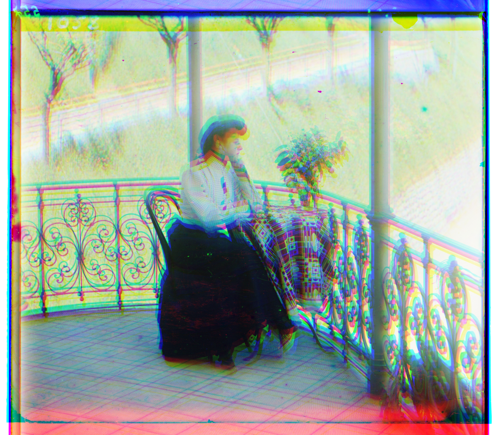
Improvements + "Bells & Whistles"
My Improvements
- Robustness: normalize
uint8/uint16inputs to[0,1]; score with NCC to ignore brightness/contrast shifts. - Fair comparisons: compute overlapping slices for each shift to avoid padding/garbage pixels and skip tiny overlaps.
- Border handling: naively crop a small interior region to remove bright plate edges that can mislead scoring.
- Coarse→fine search: seed fine‑scale alignment from coarse results; use local refine windows for speed and accuracy.
Bells and Whistles
- Feature focus: compare Sobel edge maps rather than raw intensities for lighting‑invariant texture matching.
Sobel Edge Detection:
\[G_x = \begin{bmatrix} -1 & 0 & 1 \\ -2 & 0 & 2 \\ -1 & 0 & 1 \end{bmatrix}, \quad G_y = \begin{bmatrix} -1 & -2 & -1 \\ 0 & 0 & 0 \\ 1 & 2 & 1 \end{bmatrix}\]
\[M = \sqrt{G_x^2 + G_y^2}\]
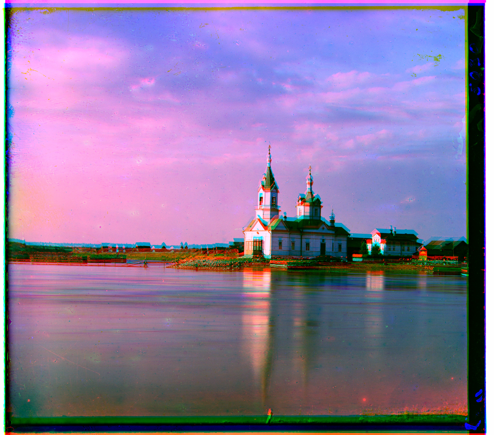
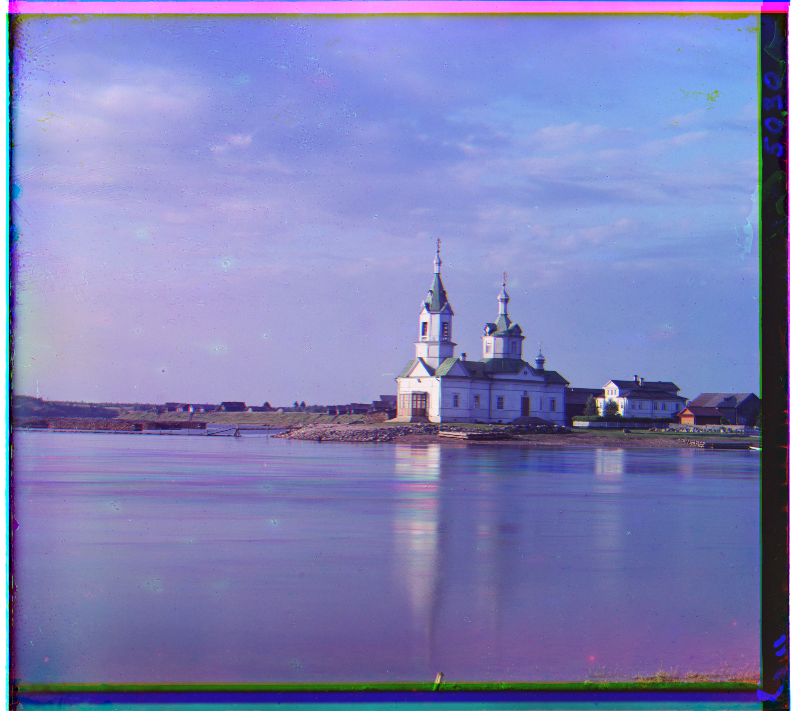
Gallery
All aligned Bells and Whistles outputs (with _bells.jpg). Captions show (green dy,dx) and (red dy,dx).
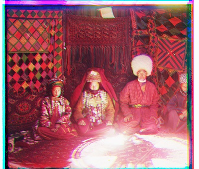
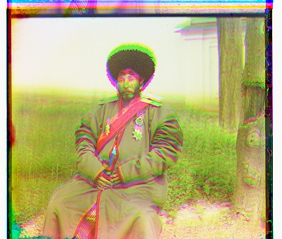
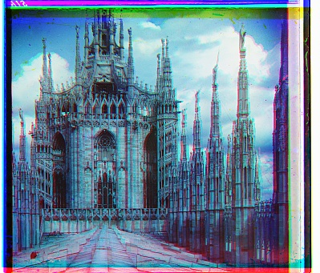


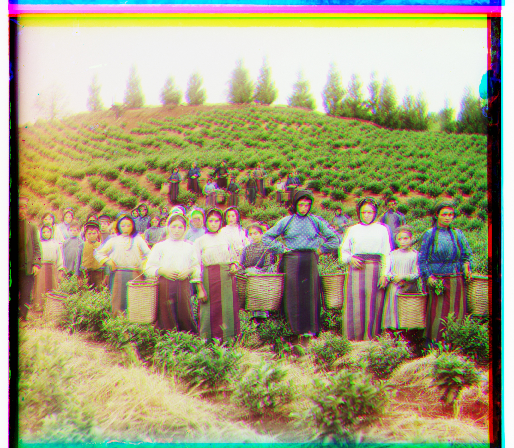
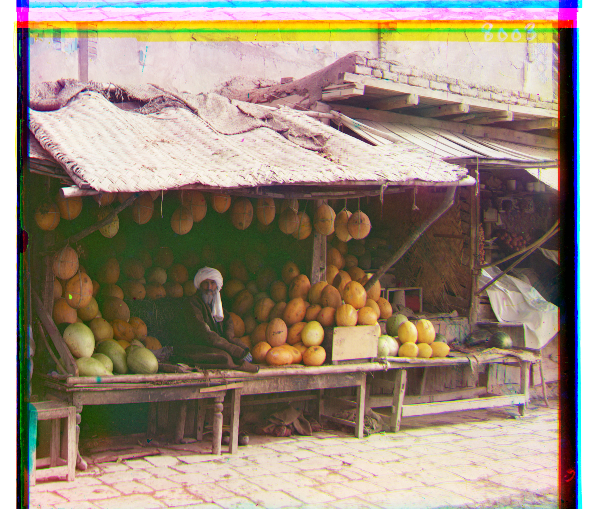
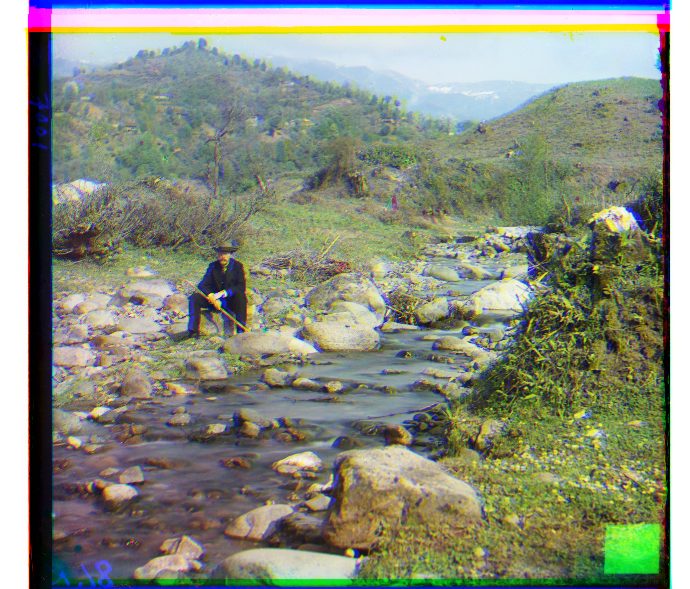
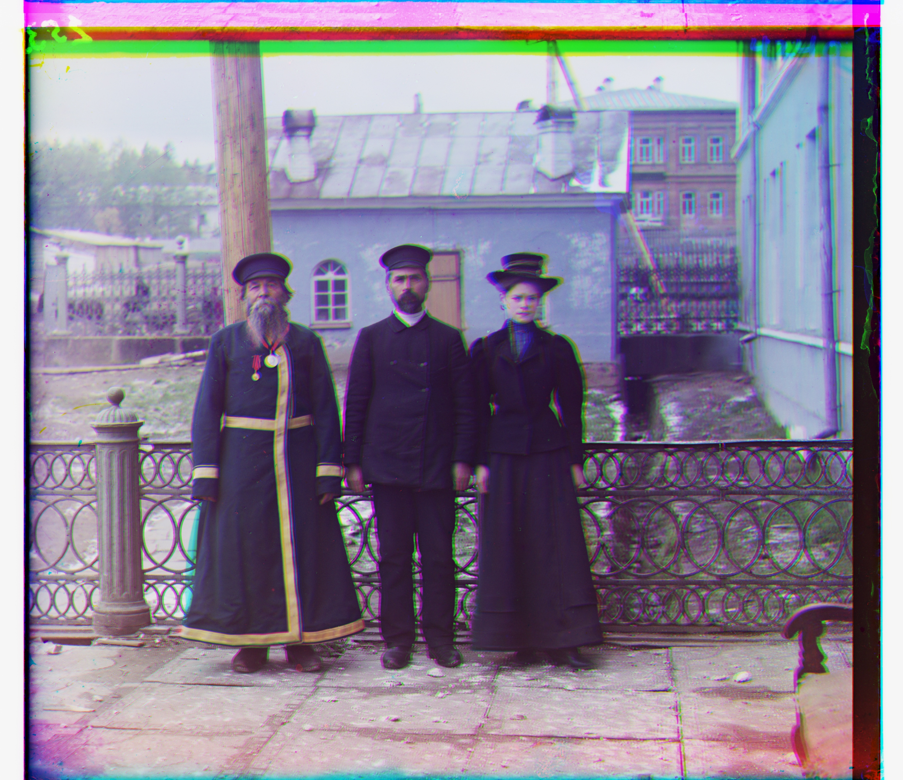